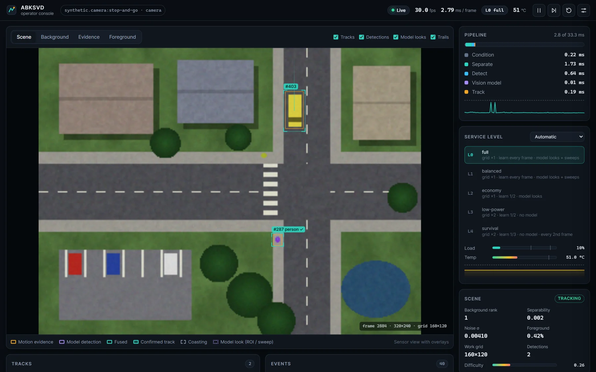

Absorption and Lock-In in Tracker-Guided Streaming Subspace Background Models
Why forgetting low-rank background models swallow targets that stop, how tracker feedback prevents it, and when that feedback loop locks in its own errors.

Overview
Streaming low-rank background models (GRASTA, ReProCS/NORST, OR-PCA, incremental PCP) must forget in order to follow illumination and scene change, and the same forgetting turns any target that stops into background. When it leaves, it leaves a ghost.
The work shows that absorption has two mechanisms: a per-pixel recursive least-squares ramp whose rate is the leverage of the current frame, independent of target size, and a size-dependent rank-crossing cascade. The resulting law predicts absorption from the background alone.
Feeding tracker beliefs back as masks prevents absorption but closes a loop that can lock in model errors. The analysis shows that an expiry clock the error can reset makes persistence exponential in the protection horizon, that the optimal horizon is a quantile of the stop-duration law, and that a budgeted semantic verifier makes the horizon non-binding.
What I built
abksvd: a modular real-time system (sensors, masked incremental SVD, detection, Kalman tracking, ONNX verifier, device profiles for Raspberry Pi 5, Jetson Orin and RK3588) with a build-free web operator console.- An evaluator that reproduces the official CDnet MATLAB confusion matrices exactly on 10 of 10 videos.
- Protocols written before the runs: front end frozen on a development split, policy chosen by leave-one-video-out, five held-out categories evaluated once.
- A decision log (D1–D29), an experiment registry with negative results, and two manuscripts whose every number is generated from raw results.
Results
| Method | IOM F (test) | Held-out F | All 11 categories | ms / frame |
|---|---|---|---|---|
| Verified loop V2 (ours) | 0.614 | 0.552 | 0.603 | 27.4 |
| Loop without verifier V0 (ours) | 0.445 | 0.526 | 0.558 | 8.3 |
| No feedback (ours) | 0.417 | 0.546 | 0.542 | – |
| NORST | 0.458 | 0.284 | 0.423 | 79 |
| OR-PCA | 0.439 | 0.417 | 0.500 | 2.6 |
| incremental PCP | 0.331 | 0.435 | 0.465 | 0.3 |
| GRASTA | 0.241 | 0.413 | 0.419 | 3.0 |
CDnet 2014, official protocol. Baselines run by me on the same frames (MATLAB, 160×120).
Figures
Run it
$ cd code/abksvd-rpca $ python -m pip install -e ".[all]" $ abksvd demo # live console at http://127.0.0.1:8765 $ PYTHONPATH=src python -m pytest # 77 tests
Cite
@misc{kahyaoglu2026absorption,
author = {Kahyao{\u{g}}lu, {\"O}mer},
title = {Absorption and Lock-In in Tracker-Guided Streaming Subspace Background Models},
year = {2026},
note = {Preprint, in preparation},
url = {https://github.com/kahyaoglu20/abksvd-rpca}
}